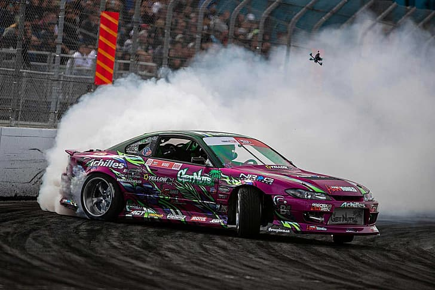

La disciplina de drift, palabra que proviene del idioma inglés, se originó en Japón en la década de 1970, creada por corredores que bajaban por carreteras de montañas a altas velocidades. La técnica original evitaba que los automóviles se salieran del camino y cayeran por los precipicios y a su vez prevenir adelantamientos. El piloto que popularizó esta técnica en Japón fue Keiichi Tsuchiya, el cual también era piloto de circuito. Su peculiar técnica en las bajadas de montañas, conocidas popularmente como touge, hizo que la gente empezase a imitarlo. Así fue evolucionando hasta que logró ser tomado en cuenta como una disciplina propia. La primera competición oficial dedicada únicamente al drifting se produjo en 1988. Después de causar revuelo en los países asiáticos logró hacerse camino hasta llegar a Estados Unidos, donde evolucionó y pasó de carreras en pistas empinadas a pistas planas..
Los vehículos utilizados en las competiciones como el D1 Grand Prix o la Formula Drift o diferentes campeonatos en el mundo, suelen llevar las siguientes modificaciones para mejorar su conducción:
. Carrocería: fabricada en fibra de vidrio, fibra de carbono, kevlar o combinaciones de estos.
. Tracción: propulsión trasera o integral a las 4 ruedas.
. Suspensión: se modifica para poder controlar mejor el vehículo.
. Se suelda el diferencial o se instala un diferencial autoblocante de deslizamiento limitado para tener una mayor tracción que permita controlar el deslizamiento del coche.
. Utilización de cubiertas especiales.
. Creación de chasis tubular reforzado que va desde el frente del motor hasta atrás del habitáculo, lo cual evita que el mismo se deforme o "tuerza" en el caso de que se sufra un accidente.
. Debido que en el momento del derrape difícilmente se cambia de marcha, en el motor se instala un SAPR (sistema de alta presión de refrigeración), bielas, pistones, aros de pistones, tapa de cilindros, cigüeñal y bloque motor forjados para las altas revoluciones alcanzadas, ya que esto disminuye el riesgo de romper el mecanismo, aunque también es válido usar bloques de aleación de aluminio para mejorar el desempeño de igual manera que los parámetros anteriores y reducir el peso. También debido a este inconveniente la segunda y tercera marcha tienen menor relación de tracción (son más largas).
